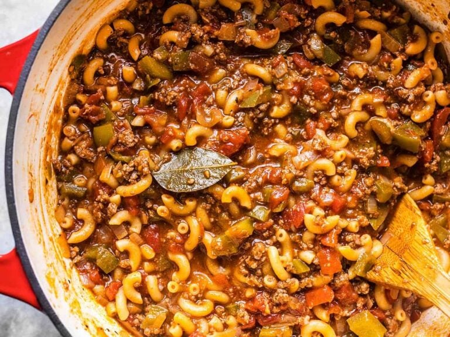

American Goulash

Description
This easy one pot version of American Goulash cooks the pasta and beef in the same pot with a homemade red wine tomato sauce for extra flavor.
Ingredients
- Olive Oil: 1 Tbsp
- Onion: 1 yellow onion
- Garlic: 4 cloves
- Bell Peppers: 2
- Ground Beef: 1 lb
- Red Wine: 1/2 cup of any type of Red Wine but stay away from very sweet varieties.
- Tomatoes: 1 28oz. can of diced tomatoes
- Tomato Sauce: 1 15oz. can of tomato sauce
- Soy Sauce: 2 Tbsp
- Bay Leaves: 2 whole bay leaves. Optional
- Oregano: 1/2 tsp dried oregano
- Basil: 1/2 tsp dried basil
- Red Pepper: 1/4 tsp crushed red pepper
- Water: 1/2 cup
- Elbow Macaroni: 2 cups or 1/2 lb.
- Salt: to taste
Steps
- Dice the onion and mince the garlic. Sauté both in a large soup pot with the olive oil over medium heat until the onions are translucent. While the onion and garlic are sautéing, dice the bell peppers, then add them to the pot and continue to sauté for about two minutes more.
- Add the ground beef to the pot with the vegetables and continue to sauté over medium until the beef is cooked through. Add the red wine to the pot and stir to dissolve any browned bits off the bottom of the pot.
- Add the diced tomatoes (with juices), tomato sauce, soy sauce, bay leaves, oregano, basil, crushed red pepper, and water to the pot. Stir to combine, place a lid on the pot, and allow it to come up to a boil. Once boiling, turn it down to low, and let the sauce simmer for 30 minutes with the lid on, stirring occasionally.
- After the sauce has simmered for 30 minutes, add the macaroni and stir to combine. Continue to let the macaroni simmer in the sauce, with the lid on, stirring occasionally, until the pasta is tender (about 10-12 minutes).
- Once the pasta is tender, taste the goulash and add salt to taste. Remove the bay leaves, then serve.